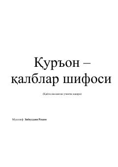

QQQur'on qalblarni poklaydi va ikki dunyo saodatiga boshlaydigan ilohiy shifodir.
Ushbu kitob Qur'oni karimning qalblar uchun shifobaxsh manba ekanligi haqida so'z yuritadi. Muallif Ziyovuddin Rahim qalbni poklash, ruhiy tarbiya va Qur'on tilovatining insonга ta'siri mavzularini oyatlar va hadislar asosida yoritadi. Kitobning qayta ishlangan uchinchi nashri bo'lib, Qur'on suralarining fazilatlari ham alohida ko'rib chiqilgan.